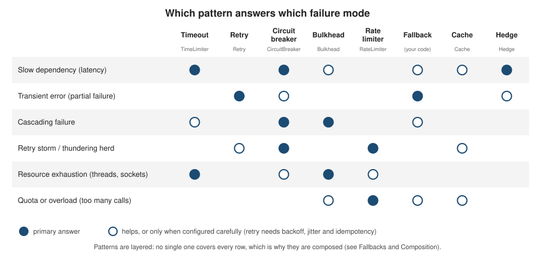

Resilience Fundamentals
|
This content was generated with the assistance of AI and should be verified against the official documentation before being relied on in production. |
This page is the concept chapter of the Resilience section: it explains what goes wrong when one service calls another, which pattern answers which problem, and how Resilience4j fits in. It was written against Resilience4j 2.4.0, Spring Boot 4.1.x, Spring Framework 7.0.x and Java 21, and the version claims were verified on 4 October 2026. Everything here is library-neutral except the code, which uses Resilience4j 2.4.0 and runs unchanged on Spring Boot 3.5.x (the Boot 3 differences are all in Getting Started).
The running example is Bookshelf, the same book-catalogue domain used by the FastAPI, NestJS, Django and
Next.js sections: a bookshelf-service that calls a slow and flaky pricing-service, a third-party ISBN-metadata
API with a request quota, an optional and expensive recommendations-service, and a reactive reviews-service.
Failure modes of remote calls
A call to another process is not a method call that happens to be slow. It crosses a network, a queue of threads and a dependency you do not control, and it can fail in ways a local call never does.
| Failure mode | What happens | Why it hurts |
|---|---|---|
Latency |
The dependency answers, but late: a garbage-collection pause, a cold cache, a saturated database. |
A slow answer is worse than an error. The caller’s thread, connection and memory stay occupied for the whole wait, and without a timeout the wait has no upper bound. |
Partial failure |
Some calls succeed and some fail: one replica is unhealthy, a deployment is half rolled out, a network path flaps. |
The caller cannot tell "failed before it ran" from "ran, but the answer was lost", which is why retries need idempotency. |
Cascading failure |
A slow or failing dependency makes its callers slow, which makes their callers slow, until the whole call graph is down. |
One degraded service takes out services that were perfectly healthy. The failure travels up the call chain. |
Retry storm |
Every layer retries a failing call, and the attempts multiply: three layers with three attempts each send 27 calls for one user request. |
The retries meant to heal the problem keep the dependency overloaded, so it cannot recover. |
Thundering herd |
Many clients react to the same event at the same moment: a breaker closing, a cache entry expiring, a service restarting. |
Synchronised retries or refills arrive as one spike. Randomised delays (jitter) spread them out. |
Resource exhaustion |
Threads, connections, sockets, memory or file descriptors are all consumed by calls that are waiting. |
Capacity that other, unrelated calls need is gone. With virtual threads the threads are cheap, but the downstream connection pool, the database and the dependency itself are not. |
AtomicInteger backendCalls = new AtomicInteger();
Supplier<String> backend = () -> {
backendCalls.incrementAndGet();
throw new IllegalStateException("503");
};
RetryConfig three = RetryConfig.custom()
.maxAttempts(3)
.waitDuration(Duration.ofMillis(1))
.build();
Supplier<String> client = Retry.decorateSupplier(Retry.of("client", three), backend);
Supplier<String> service = Retry.decorateSupplier(Retry.of("service", three), client);
Supplier<String> gateway = Retry.decorateSupplier(Retry.of("gateway", three), service);
assertThatThrownBy(gateway::get).isInstanceOf(IllegalStateException.class);
// backendCalls is 27: 3 x 3 x 3Source: Resilience4j: Retry (the Retry.decorateSupplier and RetryConfig
API). The amplification itself is a property of stacking retries, not of the library. The
Google SRE book chapter on cascading failures describes the
same effect at the scale of a whole fleet.
Latency is the failure mode that the rest of the section keeps returning to, because it is the one a plain
try/catch cannot see. Spring Boot’s connect and read timeout properties have no default value, so a call
written without them waits for as long as the underlying HTTP client allows, which is often far too long.
spring:
http:
clients:
connect-timeout: 1s
read-timeout: 2sSource: Spring Boot: Calling REST Services (the
spring.http.clients.connect-timeout and spring.http.clients.read-timeout properties; the plural clients prefix is the
Spring Boot 4 form, and the older singular spring.http.client.* keys no longer take effect). How these client timeouts nest
with the Resilience4j TimeLimiter and the gateway timeout is covered in
TimeLimiter.
The pattern catalogue
Each pattern removes one failure mode, and none removes all of them. The matrix below shows which pattern is the primary answer to which failure mode (solid dot) and which only helps, or helps only when configured carefully (hollow dot).

| Pattern | The problem it solves | Resilience4j module | Spring Boot form |
|---|---|---|---|
Timeout |
A call that never returns holds its resources forever. Bound the wait. |
|
|
Retry |
Transient failures (a dropped packet, a restarting pod) usually succeed on the next attempt. |
|
|
Circuit breaker |
A dependency that is failing or slow should be given time to recover instead of being hammered. Reject calls immediately ("fail fast") while it is unhealthy. |
|
|
Bulkhead |
Calls to one dependency must not consume all the threads or connections that other calls need. Cap the concurrency per dependency. |
|
|
Rate limiter |
A dependency has a quota, or you want to protect it from bursts. Cap the calls per period. |
|
|
Fallback |
When the call cannot succeed, return something useful (a cached value, a default, an empty list) instead of an error. |
No dedicated module: |
|
Cache |
Repeating an expensive call for the same input wastes the dependency’s capacity and adds latency. |
|
No annotation and no Boot properties; decorated programmatically |
Hedging |
The slowest few per cent of calls dominate tail latency. Send a second, speculative request and take whichever answers first. |
|
No Boot integration; decorated programmatically |
The Bookshelf scenario uses each pattern where it fits best.
| Downstream call | Patterns that guard it |
|---|---|
|
|
Third-party ISBN-metadata API: a quota, and 429/503 answers |
Client-side |
|
|
|
The Reactor operators for the same patterns |
The patterns compose, and the order matters: a retry placed outside a circuit breaker behaves differently from one placed inside it. That is the subject of Fallbacks & Composition; this page only needs the vocabulary.
The same patterns, wired by hand, look like this. Decorators is the builder from resilience4j-all, and the two
exception types listed in withFallback are the ones that trigger the fallback:
public String priceLabel(Supplier<String> pricingCall) {
return Decorators.ofSupplier(pricingCall)
.withCircuitBreaker(breaker)
.withFallback(
List.of(CallNotPermittedException.class, RuntimeException.class),
t -> "price unavailable")
.decorate()
.get();
}Source: Resilience4j: CircuitBreaker examples and the
v2.4.0 README (the Decorators builder).
Idempotency: the precondition for retries
A retry is only safe when repeating the call has the same effect as making it once. An operation that is idempotent can be repeated; one that is not can charge a customer twice.
-
GET,HEAD,PUT,DELETEandOPTIONSare defined as idempotent by RFC 9110. AGETfor a book price is always safe to retry. -
POSTis not idempotent by definition. RetryingPOST /ordersafter a read timeout may create two orders, because the first one may have succeeded. -
A non-idempotent operation becomes retryable when the server deduplicates it. The usual contract is a client-generated key sent with every attempt of the same logical operation: the server stores the first result under that key and returns it for every repeat.
public String placeOrder(String isbn) {
String key = UUID.randomUUID().toString(); // generated once, outside the retry
Supplier<String> call = () -> http.post().uri("/orders")
.header("Idempotency-Key", key)
.body(new Order(isbn, 1))
.retrieve().body(String.class);
return Retry.decorateSupplier(retry, call).get();
}Source: Resilience4j: Retry and
RFC 9110: HTTP Semantics (method idempotency). The server side of the
Idempotency-Key contract is shown for NestJS in
Resilience, Idempotency & Locks; the Spring Boot retry
rules (which methods and exceptions to retry) are in Retry.
Messaging is the exception that proves the rule. Consumer-side retries on Kafka are native to the platform
(DefaultErrorHandler, @RetryableTopic), with their own back-off, dead-letter topics and offset semantics, so
Resilience4j is not used for them. See Kafka messaging with Spring Boot
and Spring Boot and Kafka.
Fail fast versus degrade gracefully
When a dependency is unhealthy, the service can answer in one of two ways, and the choice is a product decision as much as a technical one.
Fail fast returns an error immediately. It is right when a wrong or empty answer would be worse than none (a payment,
a stock reservation) and when the caller can retry or surface the error. A circuit breaker without a fallback fails
fast: once it is open, CallNotPermittedException is thrown in microseconds, without touching the dependency.
Degrade gracefully returns a reduced answer. It is right when a stale or partial answer is still useful: the last known price, an empty recommendations list, a cached review count.
// Fail fast: the exception reaches the caller
public String priceOrFail(Supplier<String> pricingCall) {
return breaker.executeSupplier(pricingCall);
}
// Degrade: the fallback decides what the caller sees
public String priceLabel(Supplier<String> pricingCall) {
return Decorators.ofSupplier(pricingCall)
.withCircuitBreaker(breaker)
.withFallback(
List.of(CallNotPermittedException.class, RuntimeException.class),
t -> "price unavailable")
.decorate()
.get();
}Run against a dependency that is down, the first call to priceLabel returns price unavailable, the breaker opens
after its second recorded failure, and priceOrFail then throws CallNotPermittedException in roughly 0.2 ms.
Source: Resilience4j: CircuitBreaker.
Two rules keep degradation honest. A fallback must be cheaper and more reliable than the call it replaces: a fallback
that calls another remote service just moves the problem. And a degraded answer should be recognisable as such (the
stale flag on the Bookshelf Money record), so the caller and the metrics can tell the difference.
Where resilience belongs
Resilience can live in four places, and they are complementary, not alternatives.
| Layer | What it is good at | What it cannot do |
|---|---|---|
Client library (Resilience4j inside the service) |
Application-aware decisions: which exceptions count as failures, what the fallback returns, per-method configuration, business-level metrics. |
It protects only the process it runs in, and every language in the fleet needs its own library. |
Service mesh (sidecar proxies such as Istio) |
Language-neutral timeouts, retries, outlier ejection and connection limits, applied uniformly without code changes. |
It sees HTTP/gRPC requests, not your domain: it cannot return a "last known price", and its retry rules match on status codes and connection errors, not on whether the operation is idempotent. |
API gateway (API gateway and BFF) |
Protecting the edge: rate limits per client, a circuit breaker per route, a default fallback response. |
It does not protect calls between internal services. |
Platform (Kubernetes probes, autoscaling, resource limits) |
Replacing dead instances and adding capacity (health probes and lifecycle). |
It reacts in seconds to minutes, far slower than a single call needs to decide. |
A mesh and Resilience4j can both retry, and then the multiplication from the retry-storm example returns. Pick one layer to own retries for a given call, and let the others only enforce timeouts and limits.
Inside a Spring Boot service, resilience belongs at the boundary component that owns the remote call (the client, adapter or repository facade), not in controllers or business logic. That keeps one instance per remote backend and a single place to find the fallback. The Bookshelf pricing client is the model used throughout the section:
@Component
public class PricingClient {
private final RestClient http;
public PricingClient(RestClient.Builder builder,
@Value("${bookshelf.pricing.url}") String baseUrl) {
this.http = builder.baseUrl(baseUrl).build();
}
@CircuitBreaker(name = "pricing", fallbackMethod = "lastKnownPrice")
public Money price(String isbn) {
return http.get().uri("/prices/{isbn}", isbn).retrieve().body(Money.class);
}
Money lastKnownPrice(String isbn, Throwable t) {
return new Money(isbn, 0, true);
}
}Source: Resilience4j: Spring Boot 2 & 3 (annotation usage). This is the class built and run in Getting Started.
A short history: Hystrix to Resilience4j
Hystrix, written at Netflix, popularised the circuit breaker and bulkhead for the JVM. Its README now states that it is no longer in active development and is in maintenance mode, with 1.5.18 as the last release. Netflix says it keeps using Hystrix for existing applications and leverages projects such as Resilience4j for new ones. Resilience4j was designed for functional programming rather than as a port of Hystrix, and its readme.io page Comparison to Netflix Hystrix lists the differences:
-
Decorators instead of commands. Hystrix wraps a call in a
HystrixCommandsubclass. Resilience4j provides higher-order functions that enhance any functional interface, lambda or method reference. -
Stackable and optional. You pick only the decorators you need, and you can combine several on one function.
-
Synchronous or asynchronous. Any decorated function can be run synchronously or with
CompletableFuture, plus Reactor and RxJava operators for reactive types. -
Slow-call awareness. The circuit breaker can open when too many calls exceed a duration threshold, even before exceptions appear. Hystrix decides from errors and timeouts.
-
A configurable half-open probe. Hystrix runs one trial call in the half-open state; Resilience4j runs a configurable number and compares the failure rate to a threshold.
-
Both emit event streams for operators to monitor.
The same pricing call, in both libraries:
public class PriceCommand extends HystrixCommand<Long> {
private final String isbn;
public PriceCommand(String isbn) {
super(Setter.withGroupKey(HystrixCommandGroupKey.Factory.asKey("pricing"))
.andCommandPropertiesDefaults(HystrixCommandProperties.Setter()
.withExecutionTimeoutInMilliseconds(1000)
.withCircuitBreakerErrorThresholdPercentage(50)));
this.isbn = isbn;
}
@Override protected Long run() { return pricing.priceCents(isbn); }
@Override protected Long getFallback() { return 0L; }
}
long cents = new PriceCommand("978-0").execute();Supplier<Long> price = () -> pricing.priceCents(isbn);
long cents = Decorators.ofSupplier(price)
.withCircuitBreaker(breaker)
.withFallback(t -> 0L)
.decorate()
.get();Source: Netflix Hystrix README (the maintenance-mode statement, version 1.5.18) and Resilience4j: Comparison to Netflix Hystrix. A property and concept mapping table for migrating existing Hystrix code is in Migration & What’s Changed.
For a Spring application today the supported route is Resilience4j directly, or through the provider-neutral Spring Cloud CircuitBreaker abstraction.
Resilience4j’s design
-
Functional decorators. The unit of composition is a function.
CircuitBreaker.decorateSupplier(cb, call)returns anotherSupplierwith the same signature, so a decorated call can be passed anywhere the original was used. -
Modular. Each pattern is its own artifact (
resilience4j-circuitbreaker,-retry,-ratelimiter,-bulkhead,-timelimiter,-cache,-hedge), so an application adds only what it uses. -
No dependencies beyond its own modules. The core modules depend on
resilience4j-coreand a small set of internal modules. The README lists the core modules, and the integrations (Spring, Reactor, RxJava, Kotlin, Feign, Micrometer) are separate add-ons, so the core never pulls in a framework. -
Registry, configuration and instance. Every module follows the same model: a registry holds named configurations and creates named instances. Spring Boot fills the registries from
application.yml. See Registries, Configuration & Decorators. -
Events and metrics everywhere. Each instance publishes events and exposes metrics that Micrometer can bind.
-
Java 17 baseline. The 2.4.0 artifacts target Java 17 bytecode, so they run on the Java 21 used throughout the section.
Source: Resilience4j README at v2.4.0 and
the v2.4.0 release; the Java 17 baseline and the
module list come from the 2.4.0 build files, and the 2.0.x changes from the repository’s RELEASENOTES.adoc.
The same idea in other stacks
The vocabulary on this page is not specific to Spring. Other stacks on this site ship the same patterns as annotations, middleware or policy objects.
| Stack | Library | Where it is covered |
|---|---|---|
Quarkus |
SmallRye Fault Tolerance (MicroProfile Fault Tolerance): |
Fault Tolerance and Resilience. For a side-by-side with Spring Boot see Quarkus vs Spring Boot. |
NestJS |
|
|
.NET |
Polly and |
The mapping is close: a Resilience4j CircuitBreaker is a SmallRye @CircuitBreaker is a Polly circuit-breaker
strategy. The differences are in the defaults and the details (sliding-window types, slow-call rate, how failures are
classified), which is why each Resilience4j page lists every property with its default.
Distributed rate limiting with a shared store is not something Resilience4j does. Bucket4j, the usual library for it on the JVM, is covered in this same section: Resilience4j versus Bucket4j compares the two (including the same idea in other stacks) and Bucket4j: Distributed Rate Limiting covers the shared store.
Cascading failure, with and without a circuit breaker
The two diagrams below follow one slow dependency through the Bookshelf call chain. Without a breaker every layer waits, its threads fill up, and the caller’s callers start failing too.
slow, all calls hang] B -.->|threads and connections fill up| B G -.->|bookshelf-service stops answering,
gateway threads fill up| G classDef bad fill:#fbe3e3,stroke:#b03030,color:#222 class P,B,G bad
With a breaker on the pricing call, the first few slow or failed calls are recorded, the circuit opens, and the
following calls are rejected immediately and answered from the fallback. The threads are free again, so the rest of
the service keeps working while pricing-service recovers.
pricing} CB -->|OPEN: rejected in microseconds| F[Fallback:
last known price] CB -.->|CLOSED or HALF_OPEN:
trial calls only| P[pricing-service
recovering] F --> B classDef ok fill:#e3f1e3,stroke:#2f7a2f,color:#222 classDef bad fill:#fbe3e3,stroke:#b03030,color:#222 class B,G,F ok class P bad
The breaker’s states, its thresholds and its tuning are the subject of CircuitBreaker.
What changed recently
-
Hystrix has been in maintenance mode since 2018 and is not an option for new work. Resilience4j is the maintained JVM library recommended in its place.
-
Resilience4j 2.0.0 removed Vavr as a dependency and moved to Java 17; 2.0.1 added
resilience4j-spring-boot3andresilience4j-spring6for Spring Boot 3. 2.4.0 (March 2026) is the current release, andresilience4j-spring-boot4is the starter for Spring Boot 4. The full list is in Migration & What’s Changed. -
Spring Framework 7 added a small built-in retry and concurrency-limit facility (
@Retryable,@ConcurrencyLimit). It covers part of the catalogue, and the section compares it with Resilience4j in Spring Framework Native Resilience.
Where to go next
-
Getting Started: dependencies and a first
@CircuitBreaker. -
Registries, Configuration & Decorators: the programming model shared by every module.
-
CircuitBreaker, Retry, RateLimiter, Bulkhead and TimeLimiter: the modules, one page each.